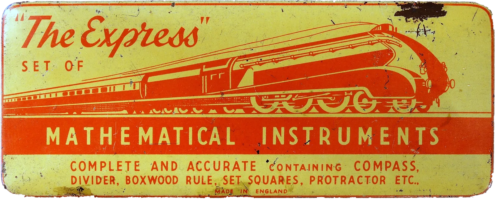

Matemáticas
De 4º de ESO a 2º de Bachillerato (Ciencias y Ciencias Sociales). Álgebra, funciones, derivadas, integrales, probabilidad y estadística.
Niveles: 4º de ESO y Bachillerato.
Un problema de 2º de Bachillerato, paso a paso
Deriva f(x) = x²·ex.
- Es un producto: u = x² y v = ex.
- Regla del producto: (u·v)′ = u′·v + u·v′.
- Deriva cada parte: u′ = 2x y v′ = ex.
- Junta y saca factor común: f′(x) = 2x·ex + x²·ex = x·ex·(x + 2).
